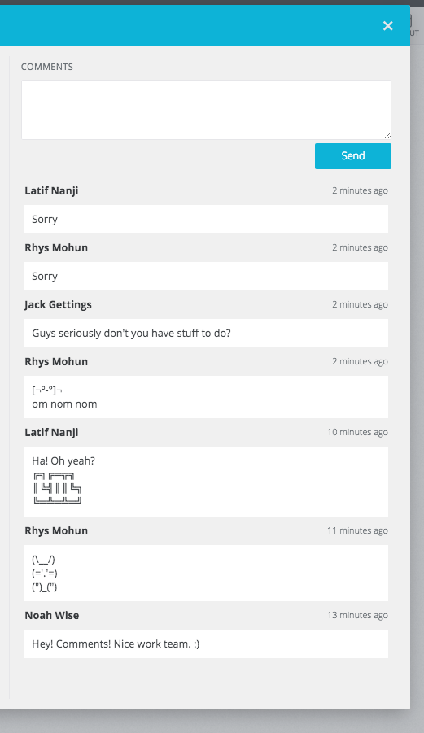
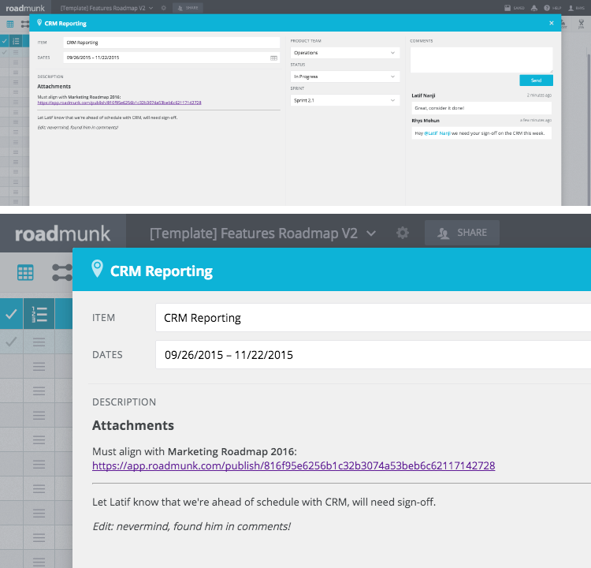
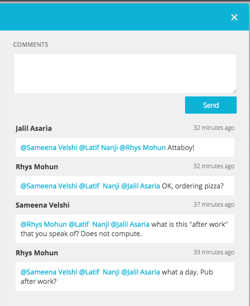

Today’s a big day here at Roadmunk. We’ve gone and done it – we made planning as a team more collaborative with the brand-new Commenting release! Are we a little proud of ourselves?
What is Commenting?
This release means a lot to users who plan as a team (and by our data that’s over 4 out of 5 users). The purpose of Commenting is to offer users a centralized place for planning. The system is made up of several important and related features:
- Leave comments on roadmap items
- Send @mentions to individual users
- Get notified about @mentions
- Reviewers have a voice
Leave comments on roadmap items
Users now have the ability to make — you guessed it — comments on individual items within a roadmap. This has pretty big implications for the way product people plan their strategy.

Track consensus in one, shared space
Right, while true “consensus” may be a mythical thing in many organizations, managers can now chase down that buy-in where the planning happens. It lets stakeholders see the vision in a shared space where they’re able to be heard. Now Roadmunk users are planning in context, providing crystal-clear clarity to team members with item-specific conversations.
The purpose of Commenting is to offer users a centralized place for planning.
Include and update important planning documents
Context is very important. We asked our users how they collaborate on complex projects leading into roadmapping. We learned that teams leave comments in PDF margins, highlight sections of a shared Google doc, attach screenshots into emails, or make suggestions directly on marketing creative with a Photoshop overlay. That’s a bit of a problem, because not everyone involved in planning will have access to those files. Still, those files are critical to the planning process.
Roadmunk has just cleared away the accessibility issue. Now files can be linked using an item description’s markdown, and teams maintain that context by making comments directly in the roadmap (think Trello).


Gather and discuss ideas outside of dedicated planning meetings
In the same vein as above, it’s important to capture feedback from the source. Not every stakeholder will be fully-prepared for a meeting (or even invited) and that leaves product managers fewer chances to solicit planning feedback. Thanks to Commenting, now users have 24/7 access to roadmaps whenever the idea strikes them.
Send @mentions to individual users
Discuss shared product lines with PMs in the portfolio
Some product managers share resources, objectives and plans with other managers in the organization. Users have the ability to discuss shared items by tapping an individual using the new @mentions system. Simply use the ‘@username’ mention format to send that user a notification within Roadmunk. Teams keep individual contributors accountable for their deliverables.

Send escalations directly to a user, in-context and with a visible history
When it’s time to bring in the cavalry, send an @mention to direct attention to a particular topic within the roadmap. That user will visit the roadmap with all the context that a plan provides, paired with whatever conversation has already taken place from concerned users. This ability includes reviewer seats, so tie-breakers could conceivably be anyone; customers, board members, executives and third-parties. With great power comes great responsibility.

Get notified about @mentions
Get notified when a user has sent a direct @mention
Feel popular as your colleagues send you personal @mention comments on your roadmap, asking for your expert input and praising your hard work. There’s no way anyone will use this as a means to add work to your plate, surely.
Reviewers can leave comments
Reviewers can chime in
Managers can now chase down that buy-in where the planning happens.
While reviewer users are “non-destructive” users of the app — many editors still wanted a way to involve them in the planning process. Today with commenting, those reviewers have a voice. Who are these collaborators? They are often:
- Customers
- Executives
- Partner stakeholders
- Board members
- Sales managers
- Marketing managers
- Customer success leads
- Investors
Just imagine how much more thorough roadmaps will be, how aligned a team could be, and how satisfied PMs can be when the whole team has had an opportunity to add value.
How to use Commenting features
We’ve got a brilliant knowledge base article written by our all-star support & success lead, Noah. (He lives for the praise, leave him a quick note will you?)
As always, if you find anything we’ve missed or you need some direct help, find us on Intercom or slide us a quick ticket through support(at)roadmunk(dot)com, everybody.
Happy roadmapping.
– Rhys


{kind=link}